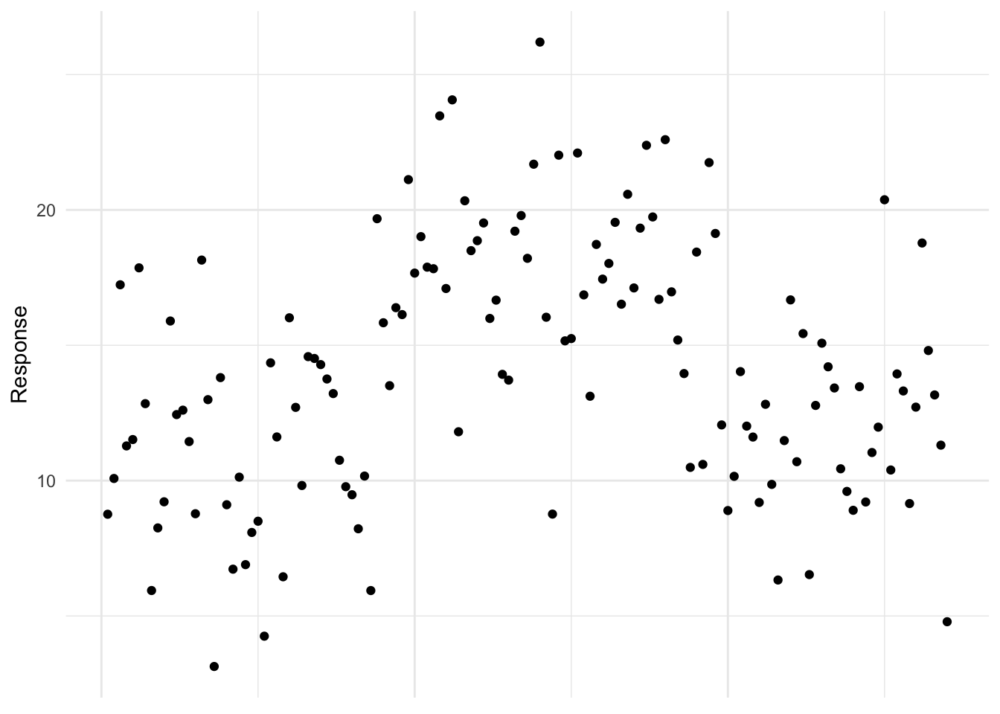
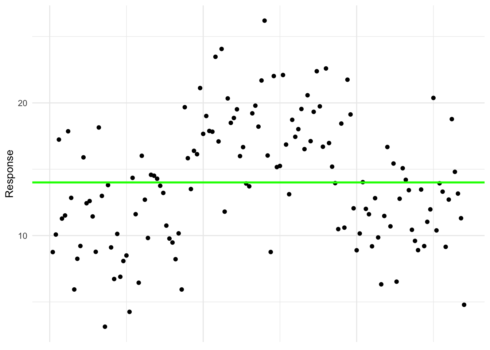
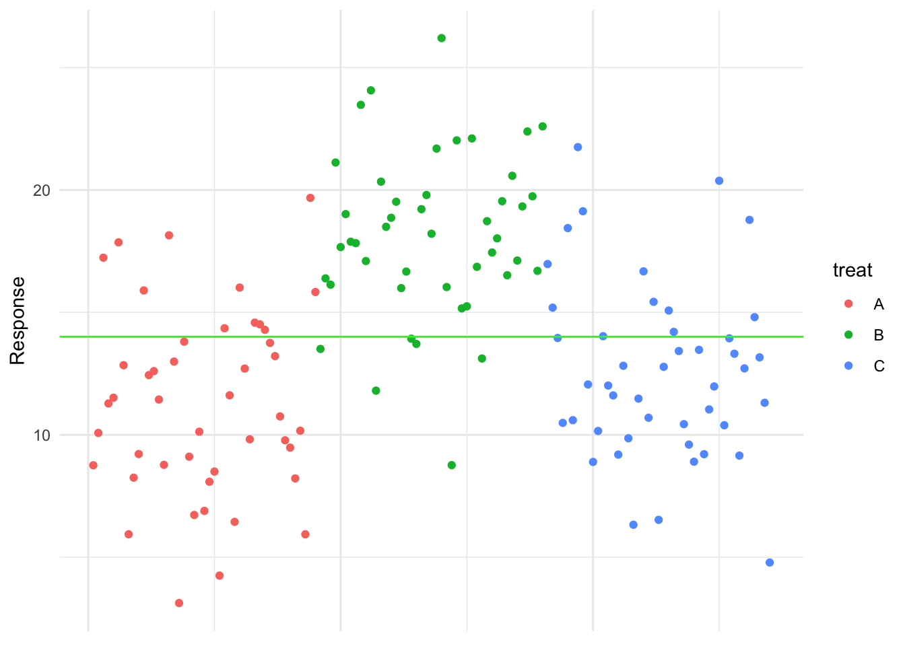
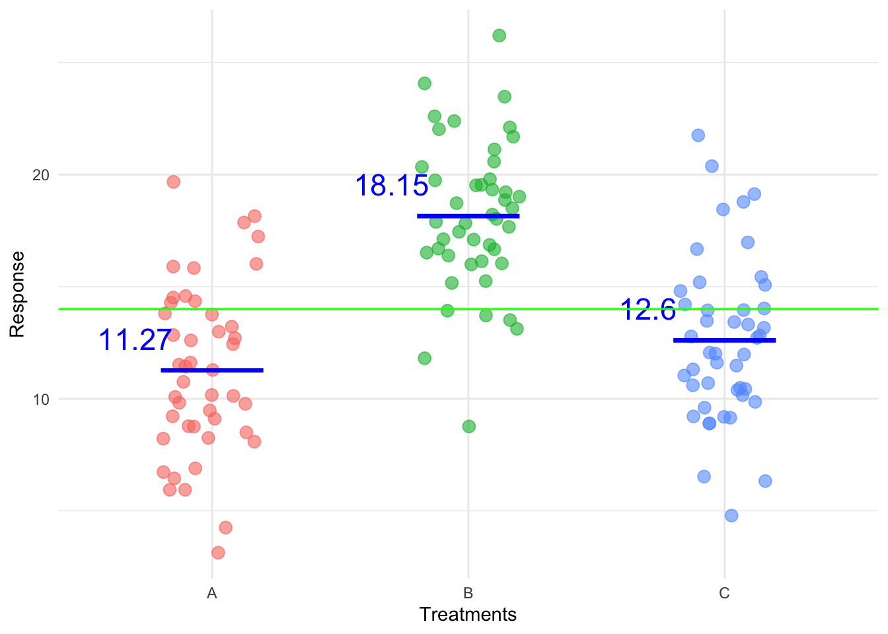
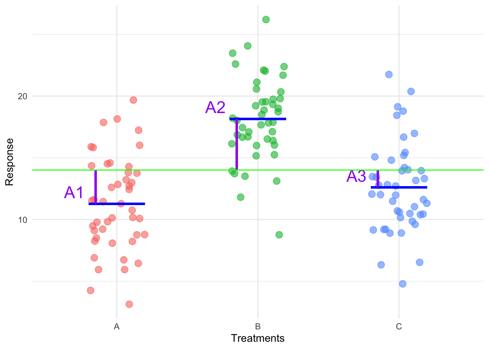
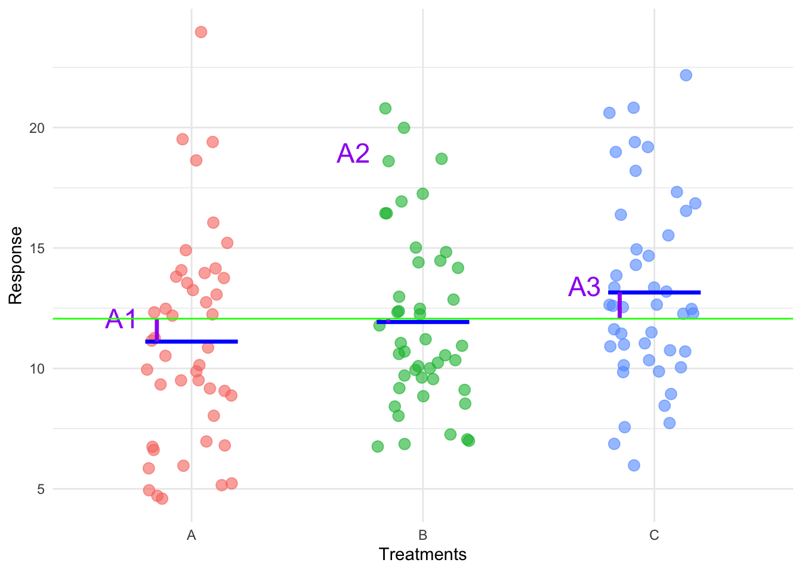
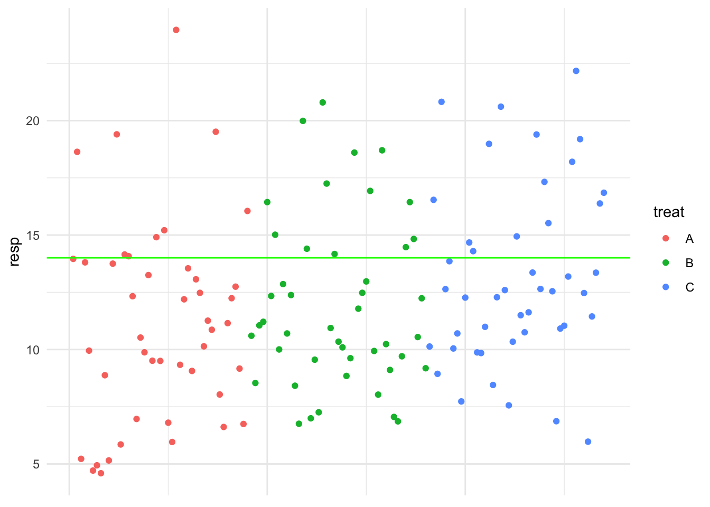

18 ANOVA Model Explanation
18.1 Step 1: The Purpose of Statistical Modeling
A statistical model is used to describe how the data are generated. It breaks down the observed variability in the data into systematic effects (patterns we can explain) and random variation (unexplained noise). When we analyse experimental data, we are trying to explain the response variable (e.g., comprehension, plant growth, exam scores, blood pressure reduction) based on the factor we manipulated (e.g., playback speed, fertilizer type, teaching method, drug type).
We have a response Y and there is variation in the observations of this response - they aren’t all the same. Perhaps the variation that we see in our response is due to our manipulation of the conditions under which we measured the response (the treatments) or maybe it isn’t and it is random noise unrelated to our manipulation. Our goal is to compare the response between the treatment groups. Specifically we are going to ask if there any differences in the mean response between the treatments.
Let’s apply this idea to a hypothetical example where we have three treatments. Below is a plot of the hypothetical data. It is clear to see that the values vary and we want to explain this variability.
To understand how variation in the response is structured, we begin with the simplest possible model. This model assumes that all observations come from a single overall mean, with only random variation around it. It assumes that every observation is just random noise around a single mean (i.e., all treatments are the same). The observations belong to a single mean with mean \(\mu\). This would be:
\[Y_{ij} = \mu + e_{ij}\]
Here, \(\mu\) is the overall mean (mean of the entire response), and \(e_{ij}\) captures all random variation of observations around that mean.

where the green line represents the overall mean, the mean of the entire response and the error is the difference between an observation and the green line.
But this ignores treatment groups entirely, it ignores the treatment structure in our data which is part of the data generating process (the experiment). In reality, our experiment was designed to test whether different treatments produce different responses, so we must extend our model to include treatment effects.

18.2 Step 2: Introducing the Treatment Effects
Now, suppose we have \(a\) different treatments (e.g., four different playback speeds). If treatment factor did have an effect, then the mean response for all or some of the treatment groups should differ and we need to incorporate this into our model so we can test for any differences between means.
Instead of assuming one overall mean for all observations, we recognize that each treatment has its own mean, say \(\mu_i\) for treatment \(i\) which we define as a deviation from the overall mean by some specific treatment-effect \(A_i\):
\[\mu_i = \mu + A_i\]
where:
- \(\mu\) is the grand mean (the average across all groups).
- \(A_i\) is the treatment effect for group \(i\) (i.e. how much the treatment deviates from the overall mean)
Let’s visualise this for the hypothetical data. First we’re going to introduce the treatment variable to the x-axis to see the treatment structure clearly and then add the treatment means:

Then in the plot below the treatment effects are visualised:

This means that for any individual observation in treatment \(i\), we write:
\[Y_{ij} = \mu_i + e_{ij}\]
or equivalently,
\[Y_{ij} = \mu + A_i + e_{ij}\]
Under this model, each observation is decomposed into three components:
- A general level (overall mean, \(\mu\))
- A treatment-specific effect (\(A_i\))
- Random noise (\(e_{ij}\)), representing variation that is not explain by the treatment mean.
The reason we use the second parameterisation is because in that form it leads directly to sums of squares and to Analysis of Variance (ANOVA) which is the statistical test for testing the following hypotheses:
Null hypothesis:
\(H0: \mu_1 = \mu_2 = \mu_3 = \mu_4 = \mu\)
In words this hypothesis says that the treatment means are the same and they are equal to the overall mean. The response belongs to a single population with mean \(\mu\). This is equivalent to the hypothesis:
\(H0: A_1 = A_2 = A_3 = A_4 = 0\)
which states that the treatment effects are zero, which reduces the model to:
\[Y_{ij} = \mu + A_i + e_{ij}\]
Alternative hypothesis:
\(H1: \text{at least one of the treatment means }(\mu_i) \text{ differ}\)
There is a difference somewhere! Not that all treatment means are different. The response does not belong to single population, there is more than one population with a mean that deviates from the overall mean. Which equates to:
\(H1: \text{At least one } A_i \neq 0\)
At least one of the treatment effects is not zero. At least one of the treatment means are different (deviate from the overall mean) and so we have evidence for a treatment effect. That is our manipulation, the treatments, induced a change in the response.
18.3 Conclusion
Eventually, we will be able to test these hypothesis but for now trust me when I say that with this data we would reject the null hypothesis. We can then further go a test for specific differences between means and we could find all three treatment means are different. What would the data look like if we weren’t going to reject the null hypothesis? Well we wouldn’t see those clear deviations from the overall mean, so something like this:

If we only plotted the response (without the treatments on the x-axis) it is clear that the simple model, where the observations belong to a single population with an overall mean \(\mu\) is more plausible. It seems the treatment factor did not have effect. The treatment effects appear small, suggesting that the observed variation in the response could be due to random noise rather than systematic differences between treatments.
